Unit A Conclusion
 Unit A Diagnostic Self-Check
Unit A Diagnostic Self-Check
SC 1. State the variables that each symbol represents in the relationship Q = mcΔt. Explain how this relationship can be used to study energy changes in chemical systems.
Program of Studies
SC 1. 30-A1.1k. Students will
- recall the application of Q = mcΔt to the analysis of heat transfer
Hint
SC 1. What does Q represent? How does this relate to energy? What do you know about energy? Are there laws to describe how energy behaves?
 Self-Check Answer
Self-Check Answer
SC 1.
Q: thermal energy transferred
m: mass of substance undergoing temperature change
c: specific heat capacity of substance undergoing temperature change
Δt: temperature change of substance
The first law of thermodynamics states that energy cannot be created or destroyed. Therefore, an energy change by a chemical process will involve a transfer of energy to its surroundings. By measuring the magnitude of the temperature change of material in the surroundings, it is possible to calculate the kinetic energy change of the surroundings. The change to the kinetic energy of the surroundings must be equal to the change in energy of the system being investigated.
Lesson(s) to Review
SC 1. Module 1 Lesson 2
SC 2. Identify the original source of the energy that is stored in hydrocarbons. By stating specific scientific principles, justify how it is possible for the energy in hydrocarbons to have originated from this source.
Program of Studies
SC 2. 30-A1.2k. Students will
- explain, in a general way, how stored energy in the chemical bonds of hydrocarbons originated from the sun
Hint
SC 2. Where do hydrocarbons come from? How does their origin involve an energy transfer?
Self-Check Answer
SC 2. The sun is the original source of the energy stored in hydrocarbons. Energy is converted through photosynthesis by plants from radiant energy to chemical potential energy.
Hydrocarbons are extracted from fossil fuels, which are the remains of prehistoric organisms. These organisms obtained their energy from the sun either directly (if they were able to photosynthesize) or indirectly (if they depended upon other organisms for their energy source).
Lesson(s) to Review
SC 2. Module 1 Lesson 1
SC 3. Prepare a table listing the similarities and differences between enthalpy and molar enthalpy change for chemical reactions.
Program of Studies
SC 3. 30-A1.3k. Students will
-
define enthalpy and molar enthalpy for chemical reactions
Hint
SC 3. How would you distinguish between these two terms? When and why is each term used?
Self-Check Answer
SC 3.
|
Enthalpy Change |
Molar Enthalpy Change |
Similarities |
indication of magnitude of energy change
energy change is associated with a change in kinetic and potential energy of a system |
|
Differences |
often referred to as heat of reaction
units are kJ
ΔrH |
enthalpy change per mole of substance undergoing a specified reaction
used when comparing the energy change in a process per mole of a reactant (e.g., energy richness of fuels)
units are kJ/mol
ΔrHm |
Lesson(s) to Review
SC 3. Module 1 Lessons 4 and 5
SC 4. Consider the following data collected for the combustion of ethanol in a basic calorimeter:
mass of ethanol combusted |
12.0 g |
mass of water in calorimeter |
4.00 kg |
temperature change of calorimeter contents |
19.5°C |
- Calculate the following values:
- enthalpy change for the reaction
- molar enthalpy for the combustion of ethanol
- molar enthalpy of reaction of oxygen in this process
- Express the energy change within the balanced chemical equation for the process.
Program of Studies
SC 4. 30-A1.4k. Students will
- write balanced equations for chemical reactions that include energy changes
30-A1.8k Students will
- use calorimetry data to determine the enthalpy changes in chemical reactions
30-A1.3s Students will
- compare energy changes associated with a variety of chemical reactions through the analysis of data and energy diagrams
Hint
SC 4. How do you use calorimetric data to calculate an enthalpy change? Do you recall the different ways that the energy change for a process can be communicated?
Self-Check Answer
SC 4.
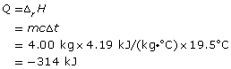
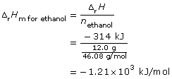
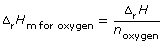
- The balanced chemical equation and enthalpy change is
C2H5OH(l) + 3 O2(g) → 2 CO2(g) + 3 H2O(g) ΔrH = –1.21 × 103 kJ
Since the balanced chemical equation indicates one mole of ethanol combusts, then
ΔrH = ΔrHm for ethanol (ncofficient for ethanol)
= –1.21 × 103 kJ/mol (1 molethanol)
= –1.21 × 103 kJ
Therefore,
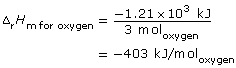
Lesson(s) to Review
SC 4. Module 1 Lesson 5
SC 5. Express the following energy changes using ΔH notation:
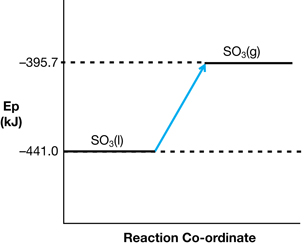
- MgO(s) + CO2(g) → MgCO3(s) + 100.3 kJ
Program of Studies
SC 5. 30-A1.5k. Students will
- use and interpret ΔH notation to communicate and calculate energy changes in chemical reactions
30-A1.3s. Students will
- compare energy changes associated with a variety of chemical reactions through the analysis of data and energy diagrams
Hint
SC 5. Do you recall the different ways that the energy change for a process can be communicated?
Self-Check Answer
SC 5.
- SO3(l) → SO3(g) ΔrH = +45.3 kJ
- 2 MgO(s) + CO2(g) → MgCO3(s) ΔrH = –100.3 kJ
Lesson(s) to Review
SC 5. Module 1 Lesson 6
SC 6. Classify the reactions in Self-Check question 5 as either exothermic or endothermic. Justify your answers.
Program of Studies
SC 6. 30-A1.10k. Students will
- classify chemical reactions as endothermic or exothermic, including those for the processes of photosynthesis, cellular respiration and hydrocarbon combustion
Hint
SC 6. What is the difference between “exo” and “endo” with respect to energy change for a system? In what ways can you communicate the direction of energy flow in a system?
Self-Check Answer
SC 6.
- Endothermic. Enthalpy change is positive. The products are higher on the potential energy diagram than the reactants.
- Exothermic. Enthalpy change is negative. Energy is located on the products side of the reaction and was therefore released by the process.
Lesson(s) to Review
SC 6. Module 1 Lesson 6
SC 7. Review the animation “The Oxygen Bomb Calorimeter” in Module 1 Lesson 2.
- Explain how the process shown could be used to experimentally determine the molar enthalpy of combustion for benzoic acid.
- If a 1.33-g tablet of benzoic acid were combusted in the experiment, use the data shown in the animation to calculate the molar enthalpy of combustion for benzoic acid.
- Express the enthalpy change for this reaction using a potential energy diagram.
Program of Studies
SC 7. 30-A1.8k. Students will
- use calorimetry data to determine the enthalpy changes in chemical reactions
30-A1.9k. Students will
- identify that liquid water and carbon dioxide gas are reactants in photosynthesis and products of cellular respiration and that gaseous water and carbon dioxide gas are the products of hydrocarbon combustion in an open system
30-A1.2s. Students will
- perform calorimetry experiments to determine the molar enthalpy change of chemical reactions
30-A1.3s. Students will
- compare energy changes associated with a variety of chemical reactions through the analysis of data and energy diagrams
30-A2.3k. Students will
- analyze and label energy diagrams of a chemical reaction, including reactants, products, enthalpy change and activation energy
Hint
SC 7. What are the basic principles by which a calorimetry experiment is designed? How would an energy change by the combusting benzoic acid be measured using the bomb calorimeter? How will you use the data you collect to calculate an energy change? Do you recall the different ways in which the energy change for a process can be communicated?
Self-Check Answer
SC 7.
- The process shown uses an electric current to initiate the combustion of the benzoic acid tablet. The bomb contains oxygen to support the combustion reaction, and the energy released by the combustion is absorbed by the water in the calorimeter, which undergoes a temperature change. Values are provided for temperature change, volume of water in the calorimeter, and the mass of benzoic acid combusted. These values are sufficient to perform the required calculation.
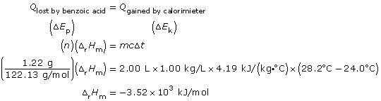
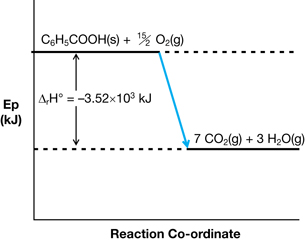
C6H5COOH(s) + 15/2 O2(g) → 7 CO2(g) + 3 H2O(g) ΔrH = -3.52 x 103 kJ
Since the balanced chemical equation indicates one mole of ethanol combusts, then
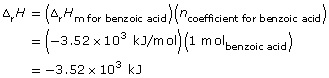
Lesson(s) to Review
SC 7. Module 1 Lessons 2, 5, and 6
SC 8. The bombardier beetle pictured on page 537 in the textbook discharges hydroquinone, C6H4(OH)2(aq), and hydrogen peroxide from separate glands. When the two solutions meet, the following net equation occurs:
C6H4(OH)2(aq) + H2O2(aq) → C6H4O2(aq) + 2 H2O(aq)
Calculate the enthalpy change for the net equation above using the information below.
C6H4(OH)2(aq) → C6H4O2(aq) + H2(g) ΔrH = +177.4 kJ
H2(g) + O2(g) → H2O2(aq) ΔrH = –191.2 kJ
H2(g) + ½ O2(g) → H2O(g) ΔrH = –241.8 kJ
Program of Studies
SC 8. 30-A1.7k. Students will
- explain and use Hess’ law to calculate energy changes for a net reaction from a series of reactions
Hint
SC 8. What is Hess’ law? How can these equations be used? How must they be arranged? How do you treat the value for the enthalpy change as you use this information?
Self-Check Answer
SC 8.
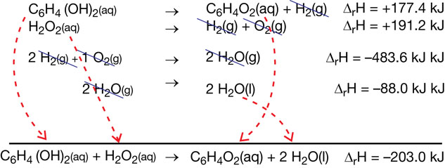
Lesson(s) to Review
SC 8. Module 1 Lesson 7
SC 9. Which fuel releases more energy per mole combusted: methane or methanol? Support your answer using a calculation and a reference to the chemical bonds of each of these fuels.
Program of Studies
SC 9. 30-A1.6k. Students will
- predict the enthalpy change for chemical equations using standard enthalpies of formation
30-A2.2k. Students will
- explain the energy changes that occur during chemical reactions, referring to bonds breaking and forming and changes in potential and kinetic energy
Hint
SC 9. When it appears you have no information other than a balanced chemical equation, how can you calculate an enthalpy change? What is “bond energy”? Do different chemical bonds possess different bond energies?
Self-Check Answer
SC 9.
combustion of methane: CH4(g) + 2 O2(g) → CO2(g) + 2 H2O(g)
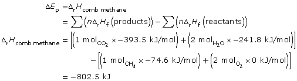
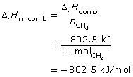
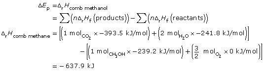
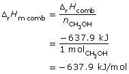
Methane has a greater molar enthalpy of combustion than methanol. The difference in the enthalpy of combustion is due to the energy stored in the bonds of the fuels. The greater molar energy change for methanol indicates that the C-H bond stores more chemical potential energy than the C-O and O-H bonds present in methanol.
Lesson(s) to Review
SC 9. Module 1 Lesson 8, and Module 2 Lesson 2
SC 10. Consider the following diagrams (Reaction 1 and Reaction 2, in that order):
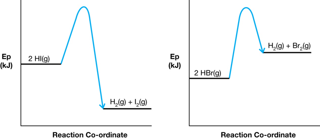
- Comment on the relative magnitudes of the activation energies and the enthalpy changes in the reactions shown in each of the diagrams.
- Predict which reaction would occur with a faster rate. Justify your prediction.
Program of Studies
SC 10. 30-A2.3k. Students will
- analyze and label energy diagrams of a chemical reaction, including reactants, products, enthalpy change and activation energy
30-A2.4k. Students will
- explain that catalysts increase reaction rates by providing alternate pathways for changes, without affecting the net amount of energy involved; e.g., enzymes in living systems
Hint
SC 10. What is activation energy? Where does the activation energy come from in a chemical system, and how would this influence the progress of a reaction?
Self-Check Answer
SC 10.
-
The activation energy diagram for Reaction 1 is higher than that of Reaction 2. Reaction 1 is a net exothermic change and Reaction 2 is a net endothermic change.
-
Reaction 2 would tend to occur faster since it has the lower activation energy. Having a lower activation energy suggests that particles involved in Reaction 2 would have a higher probability of reaching the energy threshold, since this is lower than the threshold for Reaction 1.
Lesson(s) to Review
SC 10. Module 2 Lesson 2
SC 11.
- View the video “Decomposition of Aqueous Hydrogen Peroxide: Non-Catalyzed Reaction,” which shows the decomposition of hydrogen peroxide in aqueous solution to form water and oxygen gas.
- Draw a potential energy diagram for the process observed. Ensure that your diagram includes the balanced chemical reaction, magnitude of the enthalpy change, reactants, products, activated complex, and activation energy.
- Draw a potential energy diagram for the process observed. Ensure that your diagram includes the balanced chemical reaction, magnitude of the enthalpy change, reactants, products, activated complex, and activation energy.
- View the video “Decomposition of Aqueous Hydrogen Peroxide: Catalyzed Reaction,” which shows the decomposition of hydrogen peroxide when manganese dioxide is placed into the solution.
- Identify evidence that supports that there is a change in reaction rate due to the addition of manganese dioxide.
- Identify a test you would need to perform to determine if manganese dioxide is a catalyst for this reaction.
- Assuming manganese dioxide is a catalyst for the decomposition of hydrogen peroxide, draw the energy pathway for the reaction in the presence of a catalyst.
- Identify evidence that supports that there is a change in reaction rate due to the addition of manganese dioxide.
Program of Studies
SC 11. 30-A2.1k. Students will
- define activation energy as the energy barrier that must be overcome for a chemical reaction to occur
30-A2.2k. Students will
- explain the energy changes that occur during chemical reactions, referring to bonds breaking and forming and changes in potential and kinetic energy
30-A2.2s. Students will
- draw enthalpy diagrams, indicating changes in energy for chemical reactions
30-A2.3s. Students will
- draw and interpret enthalpy diagrams for chemical reactions
Hint
SC 11. Can you use standard enthalpies of formation in combination with your observations to draw the energy diagram for this process? What difference to the rate of the reaction is caused by the addition of manganese dioxide?
Self-Check Answer
SC 11.
a.
-
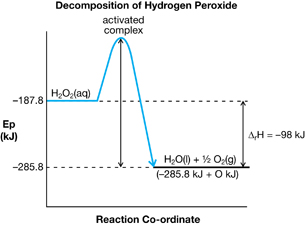
- The bubbling is more rapid in the system with the manganese dioxide than it is in the system without the manganese dioxide.
- The test would need to determine if the manganese dioxide is unchanged by the reaction. Catalysts are not consumed in a chemical process. Measure the mass of the manganese dioxide before and after the reaction to see if a change in mass has occurred. Alternatively, a quantitative analysis on the manganese dioxide could be performed to determine if any change in quantity of manganese dioxide has occurred.
- The diagram will appear similar to the diagram for part a.i., except the peak indicating the activated complex will be lower and the height of the arrow indicating the activation energy will be smaller.
Lesson(s) to Review
SC 11. Module 2 Lessons 2 and 3